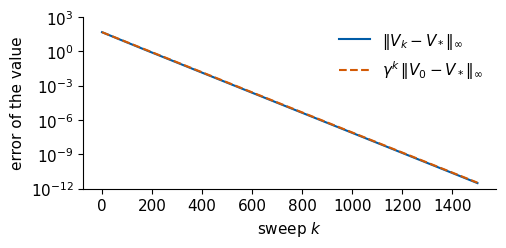
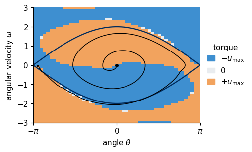
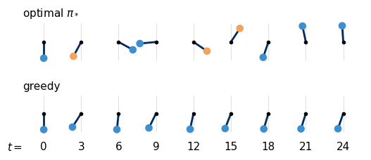
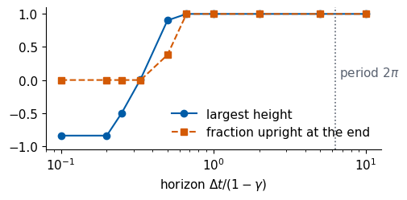
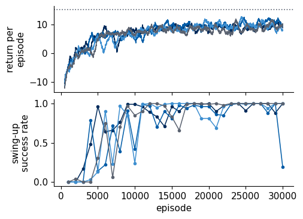
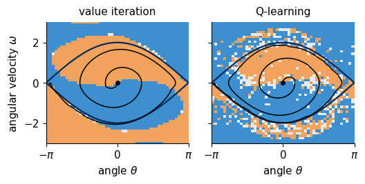

Lab 056. Pendulum swing-up and optional extended Q-learning
We develop pendulum physics, construct a discretised Markov decision process, solve it by value iteration and evaluate the controller on continuous dynamics. Later cells contain the optional extended Q-learning study. The complete notebook has been executed, including all four 30,000-episode training runs.
Execution status and classroom route
Use Lab 056a for the short planning route. The full notebook was executed on in one Python process on the CPU. All four agents completed 30,000 training episodes. Their final success rates on the fixed 100-start evaluation set were 1.00, 0.19, 1.00 and 1.00. The learning curves show the fluctuations between evaluations. The complete execution took about 83 seconds on this machine. Training checkpoints contain the tables, episode counts, random keys and learning histories.
Run all cells in order with JAX, NumPy and Matplotlib. Recorded outputs include the planning calculations and the complete Q-learning experiment. The classroom planning route ends after the discount-factor comparison.
Code
import osos.environ["JAX_PLATFORMS"] ="cpu"# run JAX on the CPU (set before importing jax)import json, timefrom functools import partialimport numpy as npimport matplotlib as mplimport matplotlib.pyplot as pltfrom matplotlib.colors import ListedColormapfrom matplotlib.patches import FancyArrowPatch, Arc, Circleimport jax, jax.numpy as jnpfrom jax import laxjax.config.update("jax_enable_x64", True) # all computations of this notebook in double precisiont_start = time.time()# slide figures are drawn at their printed size (5.2 in is the full width of a slide), so these are true font sizesmpl.rcParams.update({"font.size": 11, "axes.labelsize": 11, "axes.titlesize": 11, "xtick.labelsize": 11,"ytick.labelsize": 11, "legend.fontsize": 11, "figure.titlesize": 12, "lines.linewidth": 1.5,"axes.spines.top": False, "axes.spines.right": False, "legend.frameon": False,"figure.dpi": 150})UJNavy, UJBlue, UJSky, DSOrange, UJGray, UJGreen ="#002B5C", "#005CA7", "#3E8FD0", "#D35A05", "#5A6270", "#1a7f37"OUT ="figures"os.makedirs(OUT, exist_ok=True)NUMBERS = {}def save(fig, name):# every figure is saved as PDF (slides) and PNGfor ext in ("pdf", "png"): fig.savefig(f"{OUT}/{name}.{ext}", dpi=300, bbox_inches="tight", pad_inches=0.02)
The driven pendulum
A rigid pendulum of mass \(m\) and length \(\ell\) swings in a vertical plane about a pivot. We measure the angle \(\theta\) from the hanging position, so \(\theta=0\) is the pendulum hanging down and \(\theta=\pm\pi\) the pendulum standing upright. A motor at the pivot applies the torque \(\tau\), and friction at the pivot slows the motion in proportion to the angular velocity \(\omega=\dot\theta\). Newton’s law for the rotation, \(m\ell^2\ddot\theta=-mg\ell\sin\theta-m\ell^2 b\,\dot\theta+\tau\), divided by \(m\ell^2\), reads
with the natural angular frequency \(\omega_0\) of small oscillations, the damping rate \(b\) and the control \(u\), the torque per moment of inertia. We measure time in units of \(1/\omega_0\), so \(\omega_0=1\), the period of small oscillations is \(2\pi\), and \(u\) is the motor torque in units of the largest gravitational torque \(mg\ell\). Throughout the notebook \(b=0.1\), a weakly damped pendulum whose small-angle amplitude decays by the factor \(e^{-b t/2}\) without drive, and \(u_{\max}=0.3\).
The energy per moment of inertia, measured from the hanging position at rest,
The motor adds energy when the torque has the sign of the angular velocity and removes it when the signs differ. The upright pendulum at rest has the energy \(E_{\rm s}=2\omega_0^2\), and to reach the top the motor has to raise the energy from \(0\) to \(E_{\rm s}\).
A positive constant torque shifts the stable equilibrium near the bottom to \(\theta^*=\arcsin(u/\omega_0^2)\). Its transient turning point follows from the work done by the motor. Starting from rest at \(\theta=0\) without damping, integration of equation (3) gives \(E=u\theta\). At the first nonzero turning point, \(\omega=0\), and therefore
For the chosen torque, this equation has a nonzero root below the upright angle. Damping removes energy and lowers the first excursion. The next cell checks energy conservation without drive and damping, then compares constant-torque trajectories with the nonlinear turning-point equation. The integrator uses five fourth-order Runge–Kutta substeps over each decision interval \(\Delta t=0.1\).
Code
W0, B, UMAX =1.0, 0.1, 0.3# omega_0 (unit of frequency), damping rate b, torque limit u_maxDT, NSUB =0.1, 5# time between two decisions, Runge-Kutta substeps per decisionE_SEP =2* W0**2# energy of the upright pendulum at rest, the separatrixdef rhs(x, u, b=B):# equation (1) as a first-order system for x = (theta, omega) th, om = x[..., 0], x[..., 1]return jnp.stack([om, -W0**2* jnp.sin(th) - b * om + u], -1)def propagate(x, u, b=B):# fourth-order Runge-Kutta over one interval DT with the torque u held constant h = DT / NSUBdef body(x, _): k1 = rhs(x, u, b); k2 = rhs(x + h /2* k1, u, b); k3 = rhs(x + h /2* k2, u, b); k4 = rhs(x + h * k3, u, b)return x + h /6* (k1 +2* k2 +2* k3 + k4), Nonereturn lax.scan(body, x, None, NSUB)[0]def energy(x):# equation (2)return0.5* x[..., 1]**2+ W0**2* (1- jnp.cos(x[..., 0]))@partial(jax.jit, static_argnums=(2,))def free_run(x0, u, n, b=B):# n intervals with a constant torque u; returns the n+1 states xs = lax.scan(lambda x, _: (propagate(x, u, b),) *2, x0, None, n)[1]return jnp.concatenate([x0[None], xs])xs_free = free_run(jnp.array([2.5, 0.0]), 0.0, 1000, 0.0)E_drift =float(jnp.abs(energy(xs_free) - energy(xs_free[0])).max())xs_const = np.asarray(free_run(jnp.array([0.0, 0.0]), UMAX, 400))th_max_const =float(xs_const[:, 0].max())# Nonzero undamped turning point from motor work and pendulum energy.lo,hi=1e-8,np.pifor _ inrange(80): mid=(lo+hi)/2if W0**2*2*np.sin(mid/2)**2-UMAX*mid>0:hi=midelse:lo=midtheta_turn=(lo+hi)/2xs_undamped=np.asarray(free_run(jnp.array([0.0,0.0]),UMAX,400,0.0))assertabs(W0**2*(1-np.cos(theta_turn))-UMAX*theta_turn)<1e-12assert th_max_const<theta_turnassertabs(xs_undamped[:,0].max()-theta_turn)<1e-3print(f"no friction, no torque, 100 time units from theta = 2.5: largest change of the energy {E_drift:.1e}")print(f"constant torque u_max from rest: largest angle {th_max_const:.3f} rad = {np.degrees(th_max_const):.1f} deg, "f"nonlinear undamped turning point = {theta_turn:.6f} rad, upright = pi")NUMBERS.update(Wzero=W0, Damping=B, Umax=UMAX, Dt=DT, Esep=E_SEP, EDrift=f"{E_drift:.0e}", ThMaxConstDeg=round(np.degrees(th_max_const), 1), ThBoundConstDeg=round(np.degrees(theta_turn), 1))
no friction, no torque, 100 time units from theta = 2.5: largest change of the energy 5.1e-09
constant torque u_max from rest: largest angle 0.572 rad = 32.7 deg, nonlinear undamped turning point = 0.619567 rad, upright = pi
The energy of the free pendulum changes by less than \(10^{-8}\) over one hundred time units, so the integrator conserves what it should. With the full torque pushing towards the goal the pendulum rises to \(32.7\) degrees, below the nonlinear undamped turning point, \(\theta_{\rm turn}=0.619567\) radians, about \(35.5\) degrees, and then oscillates about the shifted equilibrium while friction damps the oscillation. The top lies at 180 degrees.
The phase portrait summarises the motion. Every curve of constant energy \(E<E_{\rm s}\) is a closed orbit around the hanging position, a libration. Every curve with \(E>E_{\rm s}\) is an open orbit along which the pendulum rotates over the top. The two families are separated by the separatrix \(E=E_{\rm s}\), \(\omega=\pm2\omega_0\cos(\theta/2)\), which connects the upright position to itself. The constant-torque motion (orange) stays in a small region near the bottom. To reach the top the controller has to carry the state outwards across the closed orbits up to the separatrix, and equation (3) says how, by pushing along \(\omega\).
In the left panel the grey curves are orbits of constant energy (2) of the pendulum without friction and drive, the thick curves the separatrix \(E=E_{\rm s}\), the dot the hanging and the stars the upright position (the points \(\theta=-\pi\) and \(\theta=\pi\) are the same configuration). The orange curve is the damped motion (1) from rest with the constant torque \(u_{\max}\). The right panel shows its angle \(\theta(t)\) against the upright angle \(\pi\) (dashed) and the shifted equilibrium \(\arcsin u_{\max}\) (dotted).
Pumping in phase with the motion works like pushing a child on a swing, which is an analogy for the same equation (3). The sketch below shows the pendulum with its torque and the growing swings. At each swing the motor pushes along the motion, the energy grows by \(u_{\max}\) times the angle travelled, and the amplitude increases until the pendulum passes over the top. For small amplitudes \(A\) the energy is \(E\approx A^2/2\), a half swing from \(-A\) to \(A\) adds \(\Delta E\approx2u_{\max}A\), and therefore the amplitude grows by about \(2u_{\max}=0.6\) per half swing. This estimate neglects friction and the anharmonicity, and it predicts that the swing-up takes roughly five half swings.
The left drawing defines the angle \(\theta\) from the hanging position, the gravitational force \(mg\) on the bob and the motor torque \(u\) at the pivot, bounded by \(u_{\max}\). The arcs on the right are successive half swings of growing amplitude, each drawn at a slightly larger radius for visibility, with the arrow giving the direction of motion and of the torque.
The classical solution of control theory uses equation (3) directly. Åström and Furuta [K. J. Åström and K. Furuta, Automatica 36, 287 (2000), doi:10.1016/S0005-1098(99)00140-5] control the energy of a pendulum whose pivot is accelerated, and the same idea applied to a torque at the pivot gives the rule
which pushes along the motion while the energy is too low and against it while the energy is too high. At rest at the bottom \(\omega=0\), and we then choose \(u=+u_{\max}\) to start the motion. Rule (4) brings the energy to the separatrix, and the pendulum then approaches the top along the separatrix. Balancing the pendulum at the top is, in the work of Åström and Furuta, the task of a second, linear controller. We use rule (4) as the physical reference for what the learned policies do.
Code
def energy_controller(x):# rule (4), with +u_max when omega = 0 s = jnp.where(x[1] * (E_SEP - energy(x)) >=0, 2, 0)return jnp.where(jnp.abs(E_SEP - energy(x)) <1e-12, 1, s)
The swing-up as a Markov decision process
A Markov decision process consists of states \(s\), actions \(a\), rewards \(r\) and the dynamics \(p(s',r\mid s,a)\), the probability that action \(a\) in state \(s\) leads to the state \(s'\) with the reward \(r\). The swing-up fits this frame once we fix four choices.
The state is the point \((\theta,\omega)\) of the phase plane, which by equation (1) determines the future motion for a given torque, so the process is Markov. The agent decides every \(\Delta t=0.1\), a tenth of a radian of the small-oscillation phase, and holds the chosen torque until the next decision. The actions are the three torques \(u\in\{-u_{\max},0,+u_{\max}\}\), labelled \(a=0,1,2\). Three values suffice for a strategy of the type of rule (4) below, which uses only the extreme torques. The reward after each interval is the height of the bob above the pivot in units of \(\ell\),
\[ r_{t+1}=-\cos\theta_{t+1}\in[-1,1], \tag{5}\]
which is \(-1\) hanging and \(+1\) upright. This reward is the one of Doya’s swing-up, with the angle measured from the hanging position, and it says nothing about energy or pumping. Any strategy has to be found by the agent. The return \(G_t=\sum_{k\ge0}\gamma^k r_{t+k+1}\) weighs a reward \(k\) intervals ahead by \(\gamma^k\). We take \(\gamma=0.98\), so rewards about \(1/(1-\gamma)=50\) intervals ahead, five time units, still count with weight \(e^{-1}\). This horizon is shorter than one period \(2\pi\) of the small oscillation, and we will vary \(\gamma\) to see how much look-ahead the swing-up needs. Episodes last 30 time units, 300 decisions.
The phase plane is a continuum, and value iteration and tabular Q-learning need a finite set of states. We cover the region \(-\pi\le\theta<\pi\), \(|\omega|\le3\) with a grid of \(51\times51\) points. The angle is periodic, so the grid wraps around in \(\theta\), and the grid points lie at \(\theta_i=-\pi+2\pi(i+\tfrac12)/51\), which puts \(\theta=0\) on a grid point and the upright position halfway between two. The velocity grid \(\omega_j=-3+6j/50\) covers the separatrix, whose largest velocity is \(2\omega_0\), with a margin. Each grid point is one state \(s\), \(2601\) states in total.
The transition probabilities come from the physics. From the grid point \(s=(\theta_i,\omega_j)\) we integrate equation (1) over \(\Delta t\) with the torque of action \(a\) and land at a point \(x'\) between four grid points. We assign the four neighbours the bilinear interpolation weights of \(x'\) as probabilities,
The stored angular coordinates wrap at the periodic boundary. To interpret their weighted mean, lift neighbouring angles by multiples of \(2\pi\) into the local interval containing the endpoint. In that locally unwrapped chart, \(\sum_jw_j\widetilde\theta_j=\widetilde\theta^{\prime}\), and \(\sum_jw_j\omega_j=\omega^{\prime}\) when velocity clipping is inactive. For a periodic function \(f\), interpolation uses \(\sum_jw_jf(\theta_j,\omega_j)\) without a global Euclidean-coordinate interpretation. The reward of the transition is the height (5) at the end point \(x'\), a deterministic function \(r(s,a)\). The discretisation turns the deterministic pendulum into a finite Markov decision process with stochastic transitions, whose randomness models the uncertainty of where in the cell the pendulum is. Grids with interpolation weights read as transition probabilities are a standard way to build a finite model of a continuous control problem [R. Munos and A. Moore, Mach. Learn. 49, 291 (2002), doi:10.1023/A:1017992615625]. The velocity of an end point outside \(|\omega|\le3\) is clipped to the edge of the grid, which never matters for the motions below.
Code
GAMMA =0.98ACTS = jnp.array([-UMAX, 0.0, UMAX]) # torques of the actions a = 0, 1, 2NT, NW, WMAX =51, 51, 3.0TH_GRID =-jnp.pi +2* jnp.pi * (jnp.arange(NT) +0.5) / NTW_GRID = jnp.linspace(-WMAX, WMAX, NW)XS = jnp.stack(jnp.meshgrid(TH_GRID, W_GRID, indexing="ij"), -1).reshape(-1, 2) # state s = i * NW + jS = XS.shape[0]def wrap(th):return (th + jnp.pi) % (2* jnp.pi) - jnp.pidef bilinear(x):# the four grid points around x and their bilinear weights, equation (6); theta wraps around ti = (wrap(x[..., 0]) + jnp.pi) / (2* jnp.pi) * NT -0.5 i0 = jnp.floor(ti).astype(int); ft = ti - i0 wi = jnp.clip((x[..., 1] + WMAX) / (2* WMAX) * (NW -1), 0, NW -1) j0 = jnp.clip(jnp.floor(wi).astype(int), 0, NW -2); fw = wi - j0 i0m, i1 = i0 % NT, (i0 +1) % NT idx = jnp.stack([i0m * NW + j0, i1 * NW + j0, i0m * NW + j0 +1, i1 * NW + j0 +1], -1) wts = jnp.stack([(1- ft) * (1- fw), ft * (1- fw), (1- ft) * fw, ft * fw], -1)return idx, wtsdef cell(x):# nearest grid point of a phase-space point, the state that the agent sees i = jnp.round((wrap(x[..., 0]) + jnp.pi) / (2* jnp.pi) * NT -0.5).astype(int) % NT j = jnp.clip(jnp.round((x[..., 1] + WMAX) / (2* WMAX) * (NW -1)).astype(int), 0, NW -1)return i * NW + jX_END = jnp.stack([propagate(XS, u) for u in ACTS], 1) # end points, shape (S, 3, 2)IDX, WTS = bilinear(X_END) # p(s'|s,a) as 4 neighbours and weightsR =-jnp.cos(X_END[..., 0]) # reward r(s,a), equation (5)dth = jnp.sum(WTS * wrap(XS[IDX][..., 0] - X_END[..., 0][..., None]), -1) # mean angle offset, wrappedxe_mean_w = jnp.sum(WTS * XS[IDX][..., 1], -1)inner = jnp.abs(X_END[..., 1]) < WMAXS_HANG =int(cell(jnp.array([0.0, 0.0])))print(f"{S} states, 3 actions, 4 successors each; rows of p sum to one within {float(jnp.abs(WTS.sum(-1) -1).max()):.1e}")print(f"largest local-chart coordinate error with velocity clipping inactive: "f"{float(jnp.where(inner, jnp.hypot(dth, xe_mean_w - X_END[..., 1]), 0).max()):.1e}")print("hanging state: grid point", np.asarray(XS[S_HANG]))NUMBERS.update(Gamma=GAMMA, NGrid=NT, NStates=S)# A seam endpoint needs locally lifted angles, while its stored arithmetic mean is zero.seam=jnp.array([jnp.pi,0.0]);seam_idx,seam_w=bilinear(seam)stored=XS[seam_idx,0]lifted=seam[0]+wrap(stored-seam[0])assert np.isclose(float(jnp.sum(seam_w*lifted)),np.pi)assert np.isclose(float(jnp.sum(seam_w*stored)),0.0)print('Periodic-seam local-chart test passes')
2601 states, 3 actions, 4 successors each; rows of p sum to one within 1.1e-16
largest local-chart coordinate error with velocity clipping inactive: 2.0e-15
hanging state: grid point [ 0.00000000e+00 -5.55111512e-17]
Periodic-seam local-chart test passes
The rows of the transition matrix sum to one. The code checks coordinate reproduction in a locally unwrapped angular chart, with velocity clipping excluded. An arithmetic mean of the stored angles would fail across the periodic seam. The figure shows the construction for one grid point. The three arrows are the motions over \(\Delta t\) under the three torques, and the circles on the grid points around the end point of \(+u_{\max}\) have areas proportional to the probabilities \(p(s'\mid s,a)\).
Grey dots are grid points of the phase plane, the navy dot is the state \(s\), and the crosses are the end points \(x'\) after \(\Delta t\) for the three torques. The numbers give the probabilities \(p(s'\mid s,a=+u_{\max})\) of the four grid points around the orange end point.
Value iteration with the model
The optimal value \(V_*(s)\) is the largest expected return from \(s\) over all policies, and it obeys the Bellman optimality equation
Value iteration applies the right-hand side \(\mathcal T\) repeatedly, \(V_{k+1}=\mathcal TV_k\) from \(V_0=0\). The map \(\mathcal T\) contracts distances in the maximum norm by at least \(\gamma\), so \(\|V_k-V_*\|_\infty\le\gamma^k\|V_0-V_*\|_\infty\) [Sutton and Barto, Sec. 4.4]. With four successors per state and action, one sweep over all \(2601\) states is a few gathers of arrays. The optimal policy picks the best action in every state, \(\pi_*(s)=\arg\max_aQ_*(s,a)\). The next cell runs value iteration far beyond convergence to obtain the reference \(V_*\) and then records the error of every iterate.
Code
def q_from_v(V, gamma):# right-hand side of equation (7) for all states and actionsreturn R + gamma * jnp.sum(WTS * V[IDX], -1)@partial(jax.jit, static_argnums=(1,))def value_iteration(gamma, n):return lax.fori_loop(0, n, lambda k, V: q_from_v(V, gamma).max(1), jnp.zeros(S))@partial(jax.jit, static_argnums=(2,))def vi_errors(gamma, V_ref, n):def body(V, _): Vn = q_from_v(V, gamma).max(1);return Vn, jnp.abs(Vn - V_ref).max()return lax.scan(body, jnp.zeros(S), None, n)[1]t0 = time.time()V_star = value_iteration(GAMMA, 4000)Q_star = q_from_v(V_star, GAMMA)PI_STAR = Q_star.argmax(1)errs = np.asarray(vi_errors(GAMMA, V_star, 1500))k_ = np.arange(1, len(errs) +1)rate = (errs[1000] / errs[500])**(1/500)print(f"value iteration, 4000 sweeps: {time.time() - t0:.1f} s; Bellman residual {float(jnp.abs(Q_star.max(1) - V_star).max()):.1e}")print(f"|V_0 - V_*| = {float(jnp.abs(V_star).max()):.2f}; error after 100, 500, 1000 sweeps: "f"{errs[99]:.2e}, {errs[499]:.2e}, {errs[999]:.2e}; measured rate per sweep {rate:.4f}, gamma = {GAMMA}")print(f"V_* at the hanging state {float(V_star[S_HANG]):.2f}, largest V_* {float(V_star.max()):.2f}, "f"upright forever would give 1/(1-gamma) = {1/(1-GAMMA):.0f}")NUMBERS.update(ViRate=round(float(rate), 4), VstarHang=round(float(V_star[S_HANG]), 2), VstarMax=round(float(V_star.max()), 2))fig, ax = plt.subplots(figsize=(5.2, 2.6))ax.semilogy(k_, errs, color=UJBlue, label=r"$\|V_k-V_*\|_\infty$")ax.semilogy(k_, GAMMA**k_ *float(jnp.abs(V_star).max()), color=DSOrange, ls="--", label=r"$\gamma^k\,\|V_0-V_*\|_\infty$")ax.set_xlabel(r"sweep $k$"); ax.set_ylabel("error of the value"); ax.set_ylim(1e-12, 1e3); ax.legend()fig.tight_layout(); save(fig, "fig_lab056_vi_convergence"); plt.show()
value iteration, 4000 sweeps: 0.6 s; Bellman residual 0.0e+00
|V_0 - V_*| = 48.74; error after 100, 500, 1000 sweeps: 6.15e+00, 1.86e-03, 7.61e-08; measured rate per sweep 0.9800, gamma = 0.98
V_* at the hanging state -32.10, largest V_* 48.74, upright forever would give 1/(1-gamma) = 50

The error of value iteration (blue) lies on the contraction bound \(\gamma^k\|V_0-V_*\|_\infty\) (dashed) and decreases by the factor \(0.980\) per sweep, the discount factor itself. The bound is reached because of the upright state. A policy that holds the pendulum upright collects a reward close to one at every step, and the \(k\)-th iterate there is the partial sum \(\sum_{n<k}\gamma^n\), whose distance to the full sum \(1/(1-\gamma)=50\) is \(\gamma^k/(1-\gamma)\). The largest optimal value is \(48.74\), close to this limit, and from the hanging position \(V_*=-32.10\), since the pendulum spends the first part of every episode below the pivot, where the reward is negative. On a grid of a few thousand states value iteration converges to round-off in about a second.
The value itself is the expected discounted height, and its numbers are hard to read. What matters is the policy, the torque that \(\pi_*\) chooses at each point of the phase plane. The map below colours every grid point by its optimal action.
Code
ACT_CMAP = ListedColormap([UJSky, "#e9ecef", "#f2a35e"])TH_EDGES = np.linspace(-np.pi, np.pi, NT +1)W_EDGES = np.linspace(-WMAX - WMAX / (NW -1), WMAX + WMAX / (NW -1), NW +1)def draw_policy(ax, pol, traj=None, legend=True):# action of every grid point; theta is the horizontal axis ax.pcolormesh(TH_EDGES, W_EDGES, np.asarray(pol).reshape(NT, NW).T, cmap=ACT_CMAP, vmin=-0.5, vmax=2.5, rasterized=True) th = np.linspace(-np.pi, np.pi, 300)for sgn in (1, -1): ax.plot(th, sgn *2* W0 * np.cos(th /2), color=UJNavy, lw=1.6)if traj isnotNone: tw = np.asarray(wrap(traj[:, 0])); jump = np.abs(np.diff(tw)) > np.pi tw_plot, w_plot = tw.copy(), np.asarray(traj[:, 1]).copy() tw_plot[1:][jump] = np.nan ax.plot(tw_plot, w_plot, color="k", lw=1.1) ax.plot(tw[0], w_plot[0], "o", color="k", ms=4) ax.set_xlim(-np.pi, np.pi); ax.set_ylim(-WMAX, WMAX) ax.set_xticks([-np.pi, 0, np.pi]); ax.set_xticklabels([r"$-\pi$", "0", r"$\pi$"]) ax.set_xlabel(r"angle $\theta$"); ax.set_ylabel(r"angular velocity $\omega$")if legend: hs = [plt.Rectangle((0, 0), 1, 1, color=c) for c in (UJSky, "#e9ecef", "#f2a35e")] ax.legend(hs, [r"$-u_{\max}$", "0", r"$+u_{\max}$"], loc="center left", bbox_to_anchor=(1.0, 0.5), title="torque", handlelength=1)E_GRID = np.asarray(energy(XS)); W_ = np.asarray(XS[:, 1])inside = (E_GRID < E_SEP) & (W_ !=0)pump = np.where(W_ >0, 2, 0)pol = np.asarray(PI_STAR)frac_pump = np.mean(pol[inside] == pump[inside])frac_zero = np.mean(pol ==1)print(f"inside the separatrix (omega != 0): optimal torque has the sign of omega in {100*frac_pump:.1f}% of the grid points")print(f"zero torque is optimal in {100*frac_zero:.1f}% of all grid points")NUMBERS.update(PumpFrac=round(100* frac_pump, 1), ZeroFrac=round(100* frac_zero, 1))
inside the separatrix (omega != 0): optimal torque has the sign of omega in 93.4% of the grid points
zero torque is optimal in 0.8% of all grid points
Code
@partial(jax.jit, static_argnums=(2,))def rollout_table(table, x0, n):# the continuous pendulum (1) driven by a tabular policy; the agent sees the nearest grid pointdef body(x, _): a = table[cell(x)];return propagate(x, ACTS[a]), (x, a) xT, (xs, acts) = lax.scan(body, x0, None, n)return jnp.concatenate([xs, xT[None]]), acts@partial(jax.jit, static_argnums=(1,))def rollout_rule(x0, n):# the continuous pendulum driven by the energy rule (4)def body(x, _): a = energy_controller(x);return propagate(x, ACTS[a]), (x, a) xT, (xs, acts) = lax.scan(body, x0, None, n)return jnp.concatenate([xs, xT[None]]), actsdef upright(xs):# within 45 degrees of the upright positionreturn np.cos(np.asarray(xs)[:, 0]) <-np.cos(np.pi /4)def summary(xs):# first time within 45 degrees of upright, time from which it stays there until the end,# fraction of the last 10 time units upright, largest height up = upright(xs); first = np.argmax(up) * DT if up.any() else np.inf stay = (len(up) - np.argmax(~up[::-1])) * DT if up[-1] else np.infreturn first, stay, up[-100:].mean(), float(np.max(-np.cos(np.asarray(xs)[:, 0])))N_EVAL =400# 40 time unitsX_HANG = jnp.array([0.0, 0.0])traj_opt, act_opt = rollout_table(PI_STAR, X_HANG, N_EVAL)PI_GREEDY = R.argmax(1) # gamma = 0, the largest immediate rewardtraj_gr, act_gr = rollout_table(PI_GREEDY, X_HANG, N_EVAL)traj_en, act_en = rollout_rule(X_HANG, N_EVAL)for nm, tr in (("optimal", traj_opt), ("greedy", traj_gr), ("energy rule (4)", traj_en)): f, stay, st, hmax = summary(tr)print(f"{nm:16s} first within 45 deg of upright at t = {f:5.1f}, stays there from t = {stay:5.1f}, "f"fraction of the last 10 time units upright {st:.2f}, largest height {hmax:.3f}")om_ = np.asarray(traj_opt[:-1, 1]); f_opt = summary(traj_opt)[1]pre = np.arange(len(om_)) * DT < f_optn_rev =int(np.sum(np.diff(np.sign(om_[pre])) !=0))print(f"optimal swing-up: {n_rev} reversals of the motion before the top")NUMBERS.update(TfirstOpt=round(summary(traj_opt)[0], 1), TupOpt=round(f_opt, 1), TfirstEnergy=round(summary(traj_en)[0], 1), StayEnergy=round(summary(traj_en)[2], 2), HmaxGreedy=round(summary(traj_gr)[3], 2), NRevOpt=n_rev, ThMaxGreedyDeg=round(float(np.degrees(np.abs(np.asarray(traj_gr[:, 0])).max())), 1))fig, ax = plt.subplots(figsize=(5.2, 3.2))draw_policy(ax, PI_STAR, traj_opt[:int(f_opt / DT) +30])fig.tight_layout(); save(fig, "fig_lab056_policy"); plt.show()
optimal first within 45 deg of upright at t = 13.6, stays there from t = 19.4, fraction of the last 10 time units upright 1.00, largest height 1.000
greedy first within 45 deg of upright at t = inf, stays there from t = inf, fraction of the last 10 time units upright 0.00, largest height -0.841
energy rule (4) first within 45 deg of upright at t = 14.2, stays there from t = 36.8, fraction of the last 10 time units upright 0.67, largest height 1.000
optimal swing-up: 5 reversals of the motion before the top

Each grid point is coloured by the optimal torque \(\pi_*(s)\), the navy curves are the separatrix, and the black curve is the swing-up of the continuous pendulum (1) from the hanging position (dot) under this policy, followed until shortly after it settles upright.
Inside the separatrix the optimal torque has the sign of \(\omega\) in \(93.4\%\) of the grid points. The upper half of the region inside the separatrix, where the pendulum moves to positive angles, is mostly orange and the lower half mostly blue. This is the pumping rule of equation (3), found by value iteration from the height reward (5) alone, without any notion of energy. The exceptions lie along the separatrix and near the top, where the policy pushes against the motion so that the pendulum comes to rest upright. Well outside the separatrix, where the energy is too high, the torque opposes the motion and removes energy. Zero torque is optimal in only \(0.8\%\) of the grid points, so the policy is almost bang-bang, like rule (4). The black trajectory spirals outwards from the bottom in growing loops. Its first approach to the top at \(t=13.6\) has too little energy, the pendulum swings back through the bottom and reaches the top from the other side, where it stays from \(t=19.4\) on, after five reversals of the motion.
The time series show the same swing-up. The torque switches with the sign of the angular velocity, the energy (2) grows swing by swing to the separatrix value \(E_{\rm s}\), and the pendulum then stays upright, held by fast switching of the torque around the unstable equilibrium.
Top, the angle \(\theta(t)\) from the hanging position at rest under the optimal policy (blue) and under the greedy policy (orange), with the upright angles \(\pm\pi\) dashed. Middle, the angular velocity \(\omega(t)\) and the torque \(u(t)/u_{\max}\) of the optimal policy. Bottom, the energy (2) under the three policies, with the separatrix energy \(E_{\rm s}\) dashed, where rule (4) is the energy controller.
Greedy against optimal
The greedy policy chooses the action with the largest immediate reward, \(\arg\max_ar(s,a)\), which is the optimal policy for \(\gamma=0\). It pushes towards the top in every state, and the pendulum behaves as under the constant torque of the first section. It rises to \(32.7\) degrees, the largest height of the bob is \(-0.84\,\ell\), and the pendulum stays near the bottom for the whole episode. The optimal policy reverses the torque at every turning point, lets the pendulum fall back from each swing, and holds the pendulum upright from \(t=19.4\) to the end. This is the delayed reward. Moving away from the goal costs height now and pays later, and only a policy that looks ahead accepts the cost. The energy rule (4) pumps as fast as the optimal policy, and its energy curve nearly coincides with the optimal one. It first comes within 45 degrees of the top at \(t=14.2\), but it holds the pendulum there only in the fraction \(0.67\) of the last ten time units, because it drives the energy to the separatrix and contains no balancing.
The strip of snapshots shows the two behaviours as the pendulum would look on a video, every three time units.
Code
def snapshot_strip(ax, traj, acts, times, colour):# pendulum drawn at the given times, side by side; the bob colour gives the torquefor k, t inenumerate(times): n =int(round(t / DT)); th =float(traj[n, 0]); x0 =2.3* k bob = (x0 + np.sin(th), -np.cos(th)) ax.plot([x0, x0], [-1.1, 1.1], color="#dee2e6", lw=0.8, zorder=0) ax.plot([x0, bob[0]], [0, bob[1]], color=colour, lw=2) a =int(acts[min(n, len(acts) -1)]) ax.add_patch(Circle(bob, 0.2, color=(UJSky, UJGray, "#f2a35e")[a], zorder=3)) ax.plot(x0, 0, "o", color="k", ms=3, zorder=4) ax.set_xlim(-1.3, 2.3* (len(times) -1) +1.3); ax.set_ylim(-1.35, 1.35); ax.set_aspect("equal"); ax.axis("off")times = np.arange(0, 25, 3.0)fig, axs = plt.subplots(2, 1, figsize=(5.4, 2.6))snapshot_strip(axs[0], np.asarray(traj_opt), np.asarray(act_opt), times, UJNavy)snapshot_strip(axs[1], np.asarray(traj_gr), np.asarray(act_gr), times, UJNavy)axs[0].set_title(r"optimal $\pi_*$", loc="left", pad=2); axs[1].set_title("greedy", loc="left", pad=2)for k, t inenumerate(times): axs[1].text(2.3* k, -1.75, f"{t:.0f}", ha="center", va="top")axs[1].text(-1.3, -1.75, r"$t=$", ha="right", va="top")fig.tight_layout(h_pad=0.2); save(fig, "fig_lab056_snapshots"); plt.show()

Each row draws the pendulum at the times \(t=0,3,\dots,24\) under the optimal (top) and the greedy policy (bottom), with the bob coloured by the torque at that moment (orange \(+u_{\max}\), blue \(-u_{\max}\), grey zero). The optimal pendulum swings to alternating sides with growing amplitude and stands upright at \(t=21\) and \(t=24\), while the greedy one leans slightly to one side the whole time.
How far the agent has to look ahead
The discount factor sets how far ahead rewards count, about \(1/(1-\gamma)\) decisions or \(\Delta t/(1-\gamma)\) time units. We repeat value iteration for several values of \(\gamma\) and run each optimal policy from the hanging position. A policy succeeds if the pendulum is within 45 degrees of upright during the whole of the last ten of 40 time units.
Code
GAMMAS = [0.0, 0.5, 0.6, 0.7, 0.8, 0.85, 0.9, 0.95, 0.98, 0.99]hz, hmax_g, stay_g = [], [], []for g in GAMMAS: Vg = value_iteration(g, 4000) tr, _ = rollout_table(q_from_v(Vg, g).argmax(1), X_HANG, N_EVAL) f, stay, st, hm = summary(tr) hz.append(DT / (1- g)); hmax_g.append(hm); stay_g.append(st)print(f"gamma = {g:4.2f} horizon {DT/(1-g):5.1f} time units largest height {hm:6.3f} "f"fraction upright in the last 10 time units {st:.2f}")ok = [g for g, st inzip(GAMMAS, stay_g) if st ==1.0]NUMBERS.update(GammaMinSwing=min(ok), HorizonMinSwing=round(DT / (1-min(ok)), 1))fig, ax = plt.subplots(figsize=(5.2, 2.6))ax.semilogx(hz, hmax_g, "o-", color=UJBlue, label="largest height")ax.semilogx(hz, stay_g, "s--", color=DSOrange, label="fraction upright at the end")ax.axvline(2* np.pi, color=UJGray, ls=":", lw=1.2); ax.text(2* np.pi *1.07, 0.05, r"period $2\pi$", color=UJGray)ax.set_xlabel(r"horizon $\Delta t/(1-\gamma)$"); ax.set_ylim(-1.05, 1.1)ax.legend(loc="lower right")fig.tight_layout(); save(fig, "fig_lab056_horizon"); plt.show()
gamma = 0.00 horizon 0.1 time units largest height -0.841 fraction upright in the last 10 time units 0.00
gamma = 0.50 horizon 0.2 time units largest height -0.841 fraction upright in the last 10 time units 0.00
gamma = 0.60 horizon 0.2 time units largest height -0.503 fraction upright in the last 10 time units 0.00
gamma = 0.70 horizon 0.3 time units largest height 0.013 fraction upright in the last 10 time units 0.00
gamma = 0.80 horizon 0.5 time units largest height 0.902 fraction upright in the last 10 time units 0.38
gamma = 0.85 horizon 0.7 time units largest height 1.000 fraction upright in the last 10 time units 1.00
gamma = 0.90 horizon 1.0 time units largest height 1.000 fraction upright in the last 10 time units 1.00
gamma = 0.95 horizon 2.0 time units largest height 1.000 fraction upright in the last 10 time units 1.00
gamma = 0.98 horizon 5.0 time units largest height 1.000 fraction upright in the last 10 time units 1.00
gamma = 0.99 horizon 10.0 time units largest height 1.000 fraction upright in the last 10 time units 1.00

For each discount factor the blue points give the largest height \(-\cos\theta\) that the optimal policy of that \(\gamma\) reaches from the hanging position within 40 time units, and the orange squares the fraction of the last ten time units spent within 45 degrees of upright. The horizontal axis is the look-ahead time \(\Delta t/(1-\gamma)\), and the dotted line marks the period of small oscillations.
The policies of \(\gamma=0\), \(0.5\) and \(0.6\) never lift the bob above the pivot. For \(\gamma=0.7\) and \(0.8\) the pendulum gets higher, and for \(\gamma=0.8\) it spends only the fraction \(0.38\) of the last ten time units upright, while for every tested value from \(\gamma=0.85\) on, a look-ahead of \(0.7\) time units, the optimal policy swings the pendulum up and holds it. This look-ahead is about a ninth of the period \(2\pi\), much shorter than the whole swing-up of about twenty time units. We read this as follows. A push along the motion pays off within the same half swing, as the pendulum climbs higher before it turns, and the swing-up is assembled from these short-range gains, even though the pendulum moves away from the goal during half of each swing. With a shorter look-ahead the policy weighs mainly the immediate height, and for \(\gamma\le0.6\) it keeps the pendulum at the bottom.
Q-learning without the model
Value iteration read the arrays of the model, the end points of every grid point under every torque. A real controller only observes what happens when it acts. Q-learning [C. J. C. H. Watkins and P. Dayan, Mach. Learn. 8, 279 (1992), doi:10.1007/BF00992698] learns the action values from such observations, one transition \((s,a,r,s')\) at a time, by moving the estimate towards a sampled version of the right-hand side of equation (7),
The agent now interacts with the continuous pendulum (1). It sees only the nearest grid point \(s\) of the true state, chooses a torque, the pendulum moves for \(\Delta t\), and the agent receives the height (5) and the nearest grid point \(s'\) of the new state. It never sees the transition probabilities (6). Actions follow the \(\varepsilon\)-greedy rule, a random torque with probability \(\varepsilon=0.1\) and the torque of largest \(Q(s,a)\) otherwise. Each episode of 300 decisions starts at a random point with \(\theta\) uniform in \([-\pi,\pi)\) and \(\omega\) uniform in \([-2,2]\), so that the agent visits all parts of the phase plane from the first episodes, and the step size decreases with the episode number \(n\) as \(\alpha_n=0.5/(1+n/2000)\). The table starts at \(Q=0\).
To measure what the agent can do we freeze its greedy policy \(\arg\max_aQ(s,a)\) every thousand episodes and run it without exploration from 100 starting points near the hanging position, with \(\theta\) and \(\omega\) uniform in \([-0.3,0.3]\). A start counts as a swing-up when the pendulum is within 45 degrees of upright during the whole of the last ten of 40 time units. We train four agents with different random seeds in parallel.
The value-iteration reference solves the finite model with bilinear transition weights. The agent trains on continuous trajectories and observes their nearest grid points. These observations group continuous states with different successors, so the tabular process is an approximation. Policy agreement measures agreement with the finite-model reference. Swing-up success is measured separately on continuous dynamics. The 300-decision training episodes cut off a continuing task, and the final update retains its continuation term.
Code
QL_EPS, QL_A0, QL_ADEC, QL_STEPS =0.1, 0.5, 2000.0, 300N_BLOCKS, BLOCK =30, 1000# 30 000 episodes, evaluated every 1000N_SEEDS =4STARTS = jnp.array(np.random.default_rng(1).uniform(-0.3, 0.3, (100, 2)))def ql_episode(carry, key): Q, n = carry alpha = QL_A0 / (1+ n / QL_ADEC) k1, k2, k3 = jax.random.split(key, 3) x0 = jnp.array([jax.random.uniform(k1, minval=-jnp.pi, maxval=jnp.pi), jax.random.uniform(k2, minval=-2, maxval=2)])def step(c, k): Q, x, G, disc = c s = cell(x); ka, kb = jax.random.split(k) a = jnp.where(jax.random.uniform(ka) < QL_EPS, jax.random.randint(kb, (), 0, 3), jnp.argmax(Q[s])) xn = propagate(x, ACTS[a]); r =-jnp.cos(xn[0]); sn = cell(xn) Q = Q.at[s, a].add(alpha * (r + GAMMA * Q[sn].max() - Q[s, a])) # equation (8)return (Q, xn, G + disc * r, disc * GAMMA), None (Q, _, G, _), _ = lax.scan(step, (Q, x0, 0.0, 1.0), jax.random.split(k3, QL_STEPS))return (Q, n +1), Gdef success_rate(table):# fraction of the 100 starts near the bottom that end uprightdef one(x0): tr, _ = rollout_table(table, x0, N_EVAL)return jnp.mean(jnp.cos(tr[-100:, 0]) <-np.cos(np.pi /4)) ==1.0return jax.vmap(one)(STARTS).mean()@jax.jitdef ql_block(carry, key): carry, G = lax.scan(ql_episode, carry, jax.random.split(key, BLOCK))return carry, G, success_rate(carry[0].argmax(1))ql_blocks = jax.jit(jax.vmap(ql_block))os.makedirs("results", exist_ok=True)t0 = time.time()carry = (jnp.zeros((N_SEEDS, S, 3)), jnp.zeros(N_SEEDS))keys = jax.random.split(jax.random.PRNGKey(56), N_SEEDS)G_hist, succ_hist = [], []for b inrange(N_BLOCKS): keys, sub = jax.vmap(jax.random.split, out_axes=1)(keys) carry, G, succ = ql_blocks(carry, sub) G_hist.append(np.asarray(G)); succ_hist.append(np.asarray(succ)) np.savez("results/lab056_training_checkpoint.npz", Q=np.asarray(carry[0]), episodes=np.asarray(carry[1]), keys=np.asarray(keys), G_hist=np.concatenate(G_hist, 1), succ_hist=np.stack(succ_hist, 1))print(f"Block {b +1}/{N_BLOCKS}, elapsed {time.time()-t0:.1f} s, success {np.asarray(succ)}", flush=True)G_hist = np.concatenate(G_hist, 1); succ_hist = np.stack(succ_hist, 1)Q_learn = carry[0]print(f"Q-learning, {N_SEEDS} seeds x {N_BLOCKS * BLOCK} episodes: {time.time() - t0:.0f} s")print("success rate of the greedy policy after 5000, 10000, 20000, 30000 episodes, per seed:")for b in (4, 9, 19, 29):print(f" {(b +1) * BLOCK:6d}: "+" ".join(f"{v:.2f}"for v in succ_hist[:, b]))print(f"optimal policy pi_*: success rate {float(success_rate(PI_STAR)):.2f}; greedy gamma = 0: {float(success_rate(PI_GREEDY)):.2f}")
fig, axs = plt.subplots(2, 1, figsize=(5.2, 3.8), sharex=True)ep = np.arange(1, G_hist.shape[1] +1)ax = axs[0]for i inrange(N_SEEDS): run_mean = np.convolve(G_hist[i], np.ones(500) /500, mode="valid") ax.plot(ep[499:], run_mean, color=(UJNavy, UJBlue, UJSky, UJGray)[i], lw=1.1)ax.axhline(float(V_star[np.abs(np.asarray(XS[:, 1])) <=2].mean()), color=UJGray, ls=":", lw=1.2)ax.set_ylabel("return per\nepisode")ax = axs[1]eb = np.arange(1, N_BLOCKS +1) * BLOCKfor i inrange(N_SEEDS): ax.plot(eb, succ_hist[i], "o-", ms=3, color=(UJNavy, UJBlue, UJSky, UJGray)[i], lw=1.1)ax.set_ylabel("swing-up\nsuccess rate"); ax.set_xlabel("episode"); ax.set_ylim(-0.05, 1.05)fig.tight_layout(h_pad=0.5); save(fig, "fig_lab056_q_learning"); plt.show()first_full = [int(eb[np.argmax(succ_hist[i] >=0.95)]) if (succ_hist[i] >=0.95).any() elseNonefor i inrange(N_SEEDS)]last5 = succ_hist[:, -5:]print("first evaluation with success rate >= 0.95, per seed:", first_full)print(f"mean success rate over the last five evaluations, per seed: {np.round(last5.mean(1), 2)}")NUMBERS.update(QlFirstGoodMin=min(f for f in first_full if f), QlFirstGoodMax=max(f for f in first_full if f), QlLastFiveMin=round(float(last5.mean(1).min()), 2), QlEpisodes=N_BLOCKS * BLOCK, QlSeeds=N_SEEDS, QlFinalSuccessMin=round(float(succ_hist[:, -1].min()), 2), QlFinalSuccessMax=round(float(succ_hist[:, -1].max()), 2), QlLastFiveMean=round(float(last5.mean()), 2))
first evaluation with success rate >= 0.95, per seed: [5000, 11000, 8000, 9000]
mean success rate over the last five evaluations, per seed: [0.98 0.81 0.99 1. ]

Top, the discounted return of each training episode, averaged over windows of 500 episodes, for the four seeds. Episodes start at random states and include exploration, and the dotted line is the optimal value \(V_*\) averaged over the grid points with \(|\omega|\le2\), an estimate of the return that the optimal policy would collect without exploration from the same random starts. Bottom, the fraction of the 100 starts near the hanging position from which the frozen greedy policy swings the pendulum up and holds it upright, evaluated every thousand episodes.
Each of the four agents reaches a swing-up policy at some point of training. The greedy policy succeeds from at least \(95\%\) of the starts for the first time after 5000 to 11 000 episodes, depending on the seed, and over the last five evaluations the mean success rate lies between \(0.81\) and \(1.00\) for the four seeds. The success rate fluctuates between evaluations. A single evaluation of one seed falls to \(0.19\) after 30 000 episodes. One hypothesis, not tested here, is that the agent sees only the nearest grid point, a whole cell of the phase plane, and a small change of \(Q\) in a few cells near the top can switch the balancing on or off. The training return grows from about \(-10\) to about \(9\) and stays below the dotted reference, since ten percent of the actions remain random and the greedy policy still differs from the optimal one in part of the phase plane.
The learned policy and its swing-up from the hanging position look as follows, next to the optimal policy of value iteration.
Code
PI_LEARN = Q_learn[0].argmax(1)traj_ql, act_ql = rollout_table(PI_LEARN, X_HANG, N_EVAL)f_ql, stay_ql, st_ql, _ = summary(traj_ql)print(f"learned policy (first seed) from the hanging position: first within 45 deg of upright at t = {f_ql:.1f}, "f"stays there from t = {stay_ql:.1f}")fig, axs = plt.subplots(1, 2, figsize=(5.4, 2.8), sharey=True)draw_policy(axs[0], PI_STAR, traj_opt[:int(f_opt / DT) +30], legend=False)draw_policy(axs[1], PI_LEARN, traj_ql[:int(stay_ql / DT) +30] if np.isfinite(stay_ql) else traj_ql, legend=False)axs[0].set_title("value iteration", pad=8); axs[1].set_title("Q-learning", pad=8); axs[1].set_ylabel("")fig.tight_layout(); save(fig, "fig_lab056_q_policy"); plt.show()agree = np.mean((np.asarray(PI_LEARN) == pol)[E_GRID < E_SEP])Qs = np.asarray(Q_star); pl = np.asarray(PI_LEARN)gap = Qs[np.arange(S), pol] - Qs[np.arange(S), pl]dis = (pl != pol) & (E_GRID < E_SEP)visited = np.zeros(S, bool); visited[np.asarray(cell(traj_opt))] =Trueagree_traj = np.mean((pl == pol)[visited])print(f"inside the separatrix the learned greedy action equals the optimal one in {100*agree:.1f}% of the grid points")print(f"on the grid points of the optimal swing-up: {100*agree_traj:.1f}%")print(f"where they differ, the loss Q_*(s, pi_*) - Q_*(s, a_learned): median {np.median(gap[dis]):.3f}, "f"90th percentile {np.percentile(gap[dis], 90):.3f}; spread of Q_* over the three actions, median over the grid "f"{np.median(Qs.max(1) - Qs.min(1)):.3f}")agree_all = [float(np.mean((np.asarray(Q_learn[i].argmax(1)) == pol)[E_GRID < E_SEP])) for i inrange(N_SEEDS)]print("agreement inside the separatrix for each seed:", np.round(100* np.array(agree_all), 1))NUMBERS.update(QlTfirst=round(f_ql, 1), QlAgreeSeedMin=round(100*min(agree_all), 1), QlAgreeSeedMax=round(100*max(agree_all), 1), QlAgree=round(100* agree, 1), QlAgreeTraj=round(100* agree_traj, 1), QlTup=round(stay_ql, 1), QlGapMedian=round(float(np.median(gap[dis])), 3), QSpreadMedian=round(float(np.median(Qs.max(1) - Qs.min(1))), 3))
learned policy (first seed) from the hanging position: first within 45 deg of upright at t = 13.9, stays there from t = 25.4
inside the separatrix the learned greedy action equals the optimal one in 81.6% of the grid points
on the grid points of the optimal swing-up: 74.7%
where they differ, the loss Q_*(s, pi_*) - Q_*(s, a_learned): median 0.235, 90th percentile 1.250; spread of Q_* over the three actions, median over the grid 0.582
agreement inside the separatrix for each seed: [81.6 82.4 80.5 81.1]

Both panels colour the grid points by the greedy torque, with the same colours as before, left the optimal policy \(\pi_*\) of value iteration and right the greedy policy of the first Q-learning agent after 30 000 episodes. The black curves are the swing-ups of the continuous pendulum from the hanging position under each policy.
The learned policy shows the same pumping pattern inside the separatrix, orange above the axis \(\omega=0\) and blue below, and it swings the pendulum up from the hanging position, first close to the top at \(t=13.9\) and upright from \(t=25.4\) on. Outside the region that the swing-up visits the map is noisy, because the agent visits these cells rarely, mostly at the start of an episode. A single number summarises the comparison with value iteration. Inside the separatrix the greedy action of the first agent equals the optimal action in \(81.6\%\) of the grid points, and \(80.5\%\) to \(82.4\%\) for the four seeds. Where they differ the loss in optimal action value, \(Q_*(s,\pi_*(s))-Q_*(s,a)\), has the median \(0.235\), against a median spread of \(0.582\) between the best and the worst action of \(Q_*\), so most disagreements are between actions of similar value. Q-learning learns what to do in the cells it visits often, and for this seed that is enough for the swing-up from the hanging position.
Summary
A pendulum with the dimensionless torque limit \(u_{\max}=0.3\) reaches only \(32.7\) degrees under a constant torque from rest, and the energy balance \(dE/dt=\omega u-b\omega^2\) shows that the motor has to push along the motion to raise the energy to the separatrix. A grid of \(51\times51\) points on the phase plane with bilinear interpolation weights as transition probabilities turns this swing-up into a finite Markov decision process with an explicit model. Value iteration solves its Bellman equation at the rate \(\gamma\) per sweep, and the resulting policy pumps energy, with the torque along \(\omega\) in \(93.4\%\) of the grid points inside the separatrix, brakes near the top and balances the pendulum upright. From the hanging position it holds the pendulum upright from \(t=19.4\) on, after five reversals of the motion. A greedy policy that maximises the immediate height never gets beyond \(32.7\) degrees, which is the delayed reward of reinforcement learning in physical form. The smallest tested discount factor giving sustained swing-up is \(\gamma=0.85\), a look-ahead of about \(0.7\) time units, a fraction of one swing, consistent with each push paying off within the same half swing. Q-learning, which sees only the grid point of the state and the height after each action, reaches a greedy success rate of at least 95% from the fixed set of 100 starts for the first time after 5000 to 11 000 episodes in each of the four seeds, without any knowledge of the equation of motion. Its success rate fluctuates from one evaluation to the next. After the full 30 000 episodes the final success rates are 1.00, 0.19, 1.00 and 1.00, so a reliable result needs evaluation across seeds and training times.